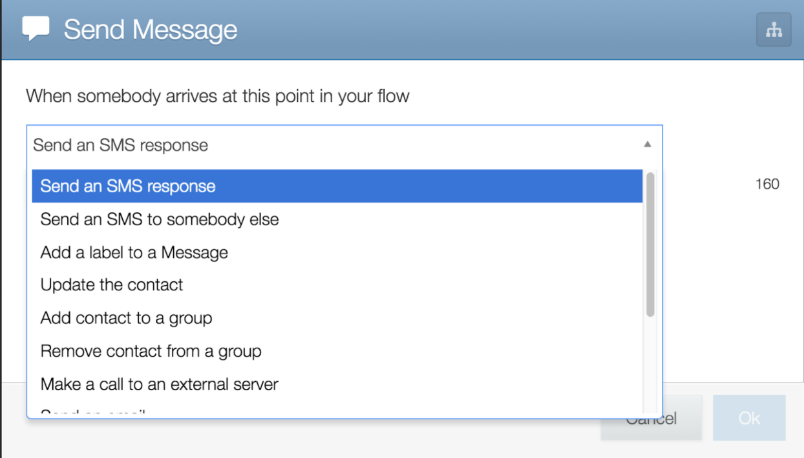

Setting up a campaign
Introduction to text message technology
There are countless ways you can send text messages to your community. We are going to focus on two tools that have worked well for us because they are inexpensive, have good customer support, and allow people without programming knowledge to use them.
These two tools are Twilio and TextIt. Together, they allow you to send text messages at the push of a button. You can think of them like a car: Twilio works as the engine, powering your messages without being seen once you set it up. TextIt is the dashboard that you use to steer and adjust your settings.
Follow along step by step here to set them up for yourself. Note: these instructions are accurate as of October 2016.
Introduction to Twilio
[content to come]
Introduction to TextIt
The tool we'll be using to set up our text message campaign is called TextIt. TextIt is build by a company called Nyaruka, based in Kigali, Rwanda.
TextIt allows you to visually build interactive text message campaigns. You don't need to be a programmer start sending texts. Anyone with a bit of training can set up and administer a campaign. So let’s get started!
First, learn more about TextIt by watching this quick video. You can always learn more by watching their training videos and reading their comprehensive documentation.
Introducing TextIt from TextIt on Vimeo.
Then, enter your email address on their homepage to get started. This is the email address that will be used to administer your text campaign, so think about which one you want to use. They will walk you through creating an account. TextIt even gives you free credits to get started with your testing.
Creating flows in TextIt
Now, it’s time to set up a test campaign. TextIt calls each diagram of a text campaign a “Flow.” Click from the homepage to see sample flows and get a feel for the structure. Then follow the steps below to set up a new flow:
- Click to create a new Flow
- Give your Flow a name - for example, “May 2016 Appointment Reminders”
- Keep the ‘Keyword Triggers’ field blank
- Change the ‘Remove Expired Contacts’ option to “Never”
- Keep it as “Run flow over messaging”
Now you can create your first message. Enter the text for what you want to send as the first text message people receive (we’ll go over best practices later). Then, follow the same steps as you saw in the Introduction Video to build your whole flow.
One trick: you can use set up alerts for yourself when someone replies or unsubscribes. Just add a new message for people who arrive at a certain point of your flow and select the option to send an SMS or email to someone else.

Our team set alerts to let us know when someone responded to a text we sent them, so we knew to log in to TextIt and personally respond to their questions.
Testing your campaign
TextIt has a built in simulator. You can use it to see how messages will appear on a phone, right in your browser.
After you test using the simulator, it's wise to test on a real phone as well. This is a good opportunity to confirm that everything's working, and catch last minute typos. To do that, you will add your own number as an option on the Contacts page and then select your contact when starting a flow.
Final set up
Before logging out of TextIt, you will want to connect your Twilio and TextIt accounts so you can send text messages with a real phone number. Do that by clicking the Channels option on TextIt and following the instructions to connect your Twilio account.